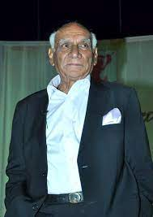

YASWANTH
BELIEVE IN
Eat(); Sleep();Code();Repeat();
About
Yash Raj Chopra (27 September 1932 – 21 October 2012)[3] was an Indian
film director and film producer who worked in Hindi cinema.
[4] The founding chairman of the film production and
distribution companyYash Raj Films, Chopra was the recipient of
several awards, including 6 National Film Awards and 8 Filmfare Awards
[5] He is considered among the best Hindi filmmakersparticularly known and
admired for his female based romantic films.
MY PORTFOLIO
Jawaharlal Nehru Technological University, Anantapur (JNTUA) has released the results
CNC-Programming fast debugging
DATA FAST ANALYSIS-How to fast data transfer one place to another place
SCHOOL PROJECT-Home made control fans